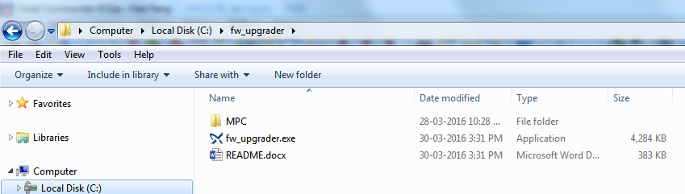
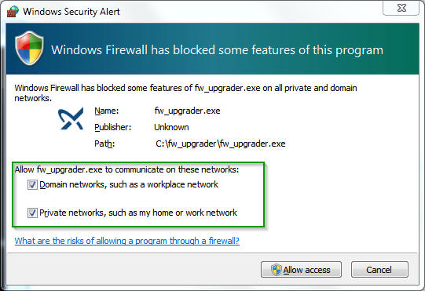
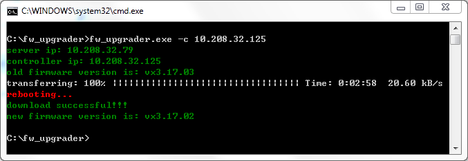

fw_upgrader is a tool which used to download firmware into Cu3x2 products.
FEATURES
- Auto download process based on web interface provided by Cu3x2.
- Internal TFTP server.
DESCRIPTION
Normally, if you want to download firmware into Cu3x2 products, you need to:
- Run a 3rd party tftp tool such as TFTP64.exe.
- Specify the MPC folder.
- Open webpage, launch java applet and wait a minute to see the home page.
- Go to download page, change the server address, and then click start button.
- When downloading finished, you also need to click reboot button and wait a minute to refresh this page.
- Verify the firmware version.
Use this tool, just one command:
fw_upgrader -c 10.208.32.125
It will then automatically run a tftp server inside and then simulate above steps in webpage, if everything is OK, a progress bar will show. When finished, it will auto reboot and show the new firmware version.
INSTALLATION
-
Download fw_upgrader into any folder in your PC. (For example, c:\fw_upgrader)
-
Create a new folder MPC inside and copy cu362_firmware.bin into MPC folder.

PREREQUISITES
There are some settings needed before start to use fw_upgrader. Please read setting.
USAGE
Resume that Cu3x2 product on your hand is using DHCP to get IP address and IP is "10.208.32.125".
-
Open cmd window and change directory to this folder(c:\fw_upgrader).
-
Run this command:
fw_upgrader.exe -c 10.208.32.125. First time to run this command, Windows Security Alert pops up, please mark all checkbox and click "Allow access".

- fw_upgrader start to download firmware automatically, eventually you can get result as below screenshot.

ARGUMENTS
Optional arguments:
| argument | description |
|---|---|
| -h, --help | show this help message and exit |
| -p, --path | path to the directory which contains MPC folder and firmware bin file inside |
| -s, --server | server IP |
| -c, --controller | controller IP |
| -r, --route_ip | route IP, same as server IP if not set |
| -l, --loglevel | log level, 0=no log, 1=info, 2=debug |
| -t, --timeout | timeout for tftp server, default=20s |
| -w, --web_response_timeout | timeout for web response, default=20s |
| -n, --noreboot | enable this to skip reboot |
Note:
- Only -c/--controller is force required.
- If you don't set server IP, fw_upgrader will auto get IP for you, but if you have more than 2 IP(for example, an additional USB Ethernet card is installed), please add -s/--server argument to specify which IP you want to use.